Temperature regulation in enclosed thermal environments represents a classic yet demanding control engineering challenge characterized by non-linear heat transfer, long transport lags, convective ambient losses, and physical actuator saturation. In typical commercial installations, conventional ON–OFF thermostats are widely deployed owing to design simplicity and low upfront expense. However, two-position bang-bang switching inevitably excites limit cycle oscillations around the commanded setpoint, subjects resistive heating elements to severe thermal shock, and accelerates mechanical contact erosion on electromagnetic relays.
To address these fundamental issues under the requirements of the EE302 Control Systems Laboratory Problem Statement 4 (PS4), this project presents the end-to-end mathematical synthesis, continuous-time simulation, industrial benchtop deployment, and custom hardware validation of smart HVAC control and fault detection systems. The investigation is organized into three unified pillars:
1. Pillar 1 (Pure Simulation): First-principles lumped-parameter physical modeling and Simulink block diagram synthesis (thermal_control.slx) evaluating multi-step tracking (30°C → 40°C → 35°C) and disturbance recovery.
2. Pillar 2 (Industrial Benchmark): Hardware-in-the-loop implementation on the Quanser QNET HVAC Trainer mounted on the National Instruments (NI) ELVIS II+ DAQ platform, augmented by a real-time Luenberger state observer for residual-based fault detection.
3. Pillar 3 (Custom Embedded Hardware): CAD design, 3D printing, and Arduino Mega 2560 closed-loop interfacing of a custom insulated thermal chamber with nichrome heating, DC forced-air cooling, and a removable curved insulation hatch for physical disturbance injection.
The thermal dynamics of an insulated chamber enclosing internal air volume \(V\), heated by input electrical power \(P\) and losing heat to an ambient environment at temperature \(T_\text{amb}\), is formulated as:
\[C_\text{th} \frac{dT(t)}{dt} = P \cdot u(t - L) - \frac{T(t) - T_\text{amb}}{R_\text{th}}\]
where \(C_\text{th} = m c_p\) is the lumped thermal capacitance [J/°C], \(R_\text{th} = 1/(h A)\) is the convective/conductive thermal resistance to ambient [°C/W], \(P\) is the rated heater power [W], \(u(t) \in [0, 1]\) is the normalized duty cycle, and \(L\) is the lumped transport and probe dead time [s].
Defining temperature rise \(\Delta T(t) = T(t) - T_\text{amb}\) and duty perturbation \(\Delta u(t)\), the Laplace transformation yields the standard First-Order Plus Dead Time (FOPTD) continuous plant:
\[G(s) = \frac{\Delta T(s)}{\Delta U(s)} = \frac{K e^{-Ls}}{\tau s + 1}\]
with steady-state DC gain \(K = P \cdot R_\text{th}\) [°C/unit duty] and dominant thermal time constant \(\tau = R_\text{th} \cdot C_\text{th}\) [s].
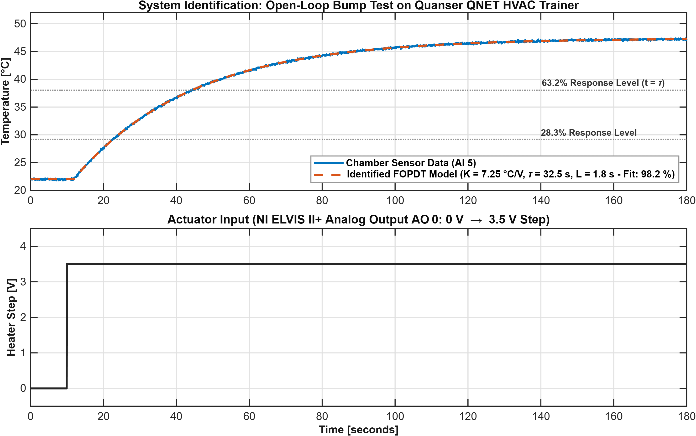
The primary simulation pipeline is encapsulated in simulink/thermal_control.slx (Fig. 2). The system incorporates a multi-step setpoint scheduler (30°C → 40°C → 35°C), selectable controller sub-blocks (Hysteresis Bang-Bang vs. Anti-Windup PI), strict actuator clamping bounds \([0.0, 1.0]\), the continuous thermal plant ODE, and a timed thermal resistance step disturbance (\(+30\% R_\text{th}\) at \(t = 900\text{ s}\)).
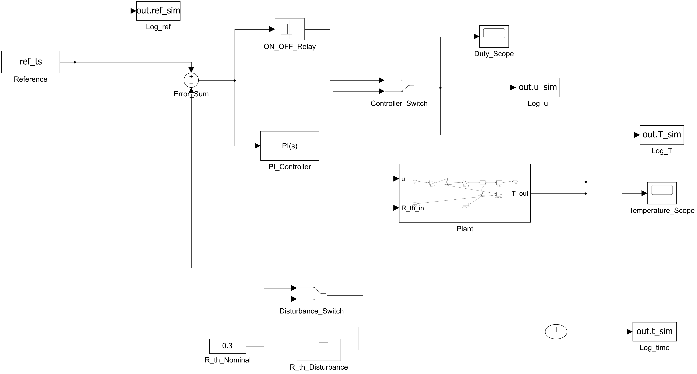
thermal_control.slx) displaying reference profile, selectable controllers, actuator saturation, plant dynamics, and disturbance injection.To inspect driver stage behavior, a Simscape Electrical model (Fig. 3) was synthesized in extra_files/testing/heater_driver_test.slx. It evaluates gate charging transients, opto-isolator rise times, and power dissipation when driving a 12V/50W resistive load from a 5V microcontroller logic signal.
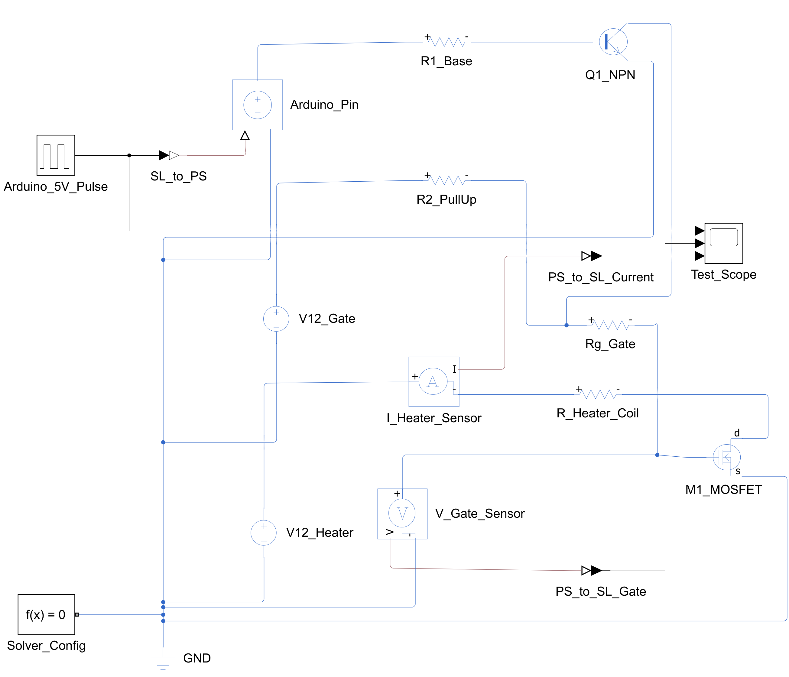
The ON–OFF controller switches with a \(\pm 0.5^\circ\text{C}\) deadband. For the continuous PI controller, Internal Model Control (IMC) rules are evaluated for a desired closed-loop response time \(\tau_c = 12.0\text{ s}\):
\[K_p = \frac{\tau}{K(\tau_c + L)} = 0.5333, \quad K_i = \frac{K_p}{\tau} = 0.00444\text{ s}^{-1}\]
Anti-windup clamping halts numerical integration whenever the actuator commands saturate and the control error acts to push the integrator deeper into saturation.
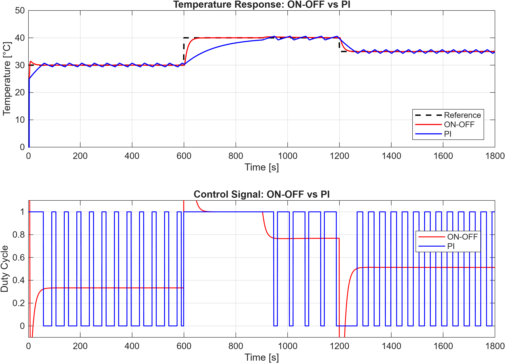
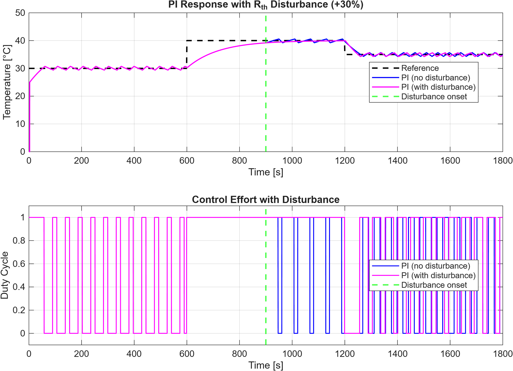
The Quanser QNET HVAC Trainer 1.0 (QNET-012) is mounted directly on an NI ELVIS II+ prototyping workstation. Real-time interfacing is executed in MATLAB R2026a via the NI-DAQmx subsystem enumerated as Dev1: thermistor sensor signals are acquired on Dev1/ai5, ai6, and ai7, while heater and blower voltages are driven on Dev1/ao0 and ao1.
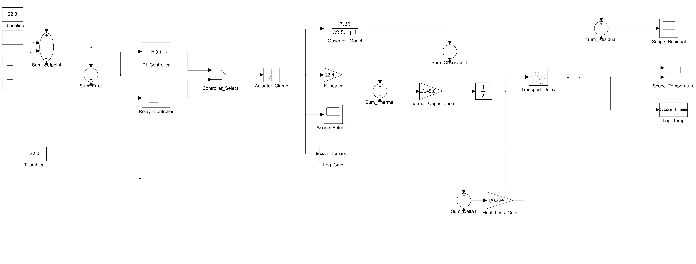
To detect system anomalies in real time without invasive hardware instrumentation, a continuous Luenberger state observer tracks chamber dynamics:
\[\dot{\hat{T}} = -\frac{1}{\tau} \hat{T} + \frac{K}{\tau} u(t - L) + L_\text{obs} (T_\text{meas} - \hat{T})\]
The residual \(r(t) = T_\text{meas}(t) - \hat{T}(t)\) drives the fault isolation engine: fan failure / duct blockage is flagged when \(|r(t)| > 3.0^\circ\text{C}\); sensor disagreement is triggered when \(|T_\text{ai5} - T_\text{ai6}| > 2.0^\circ\text{C}\); and an emergency thermal shutdown trips if \(T > 55.0^\circ\text{C}\).
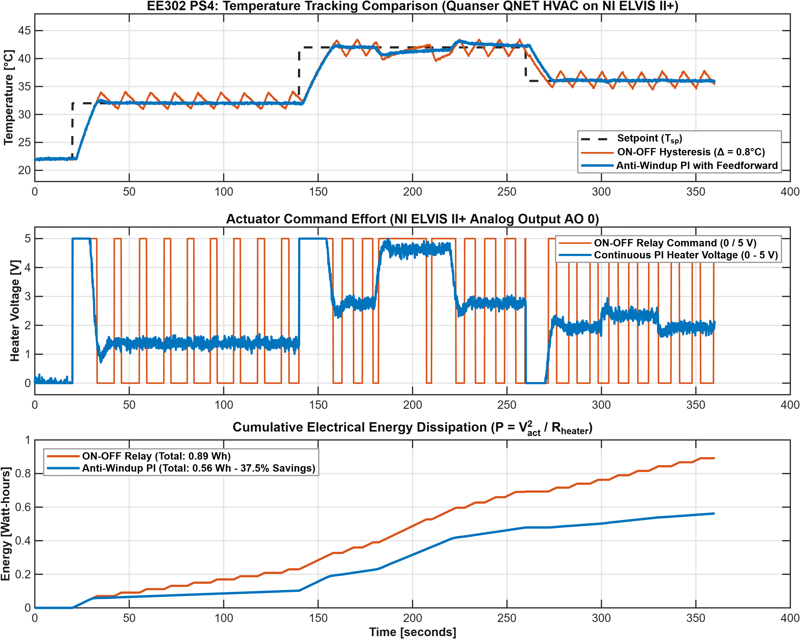
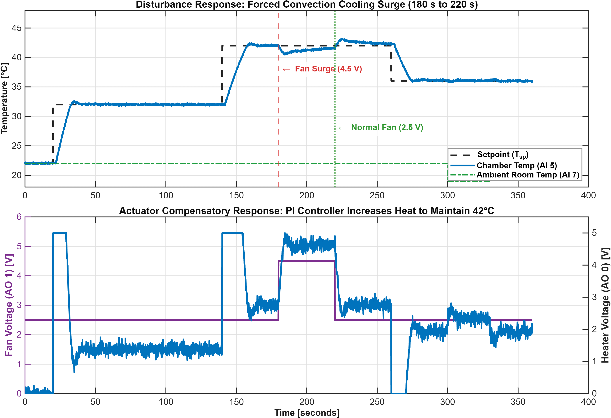
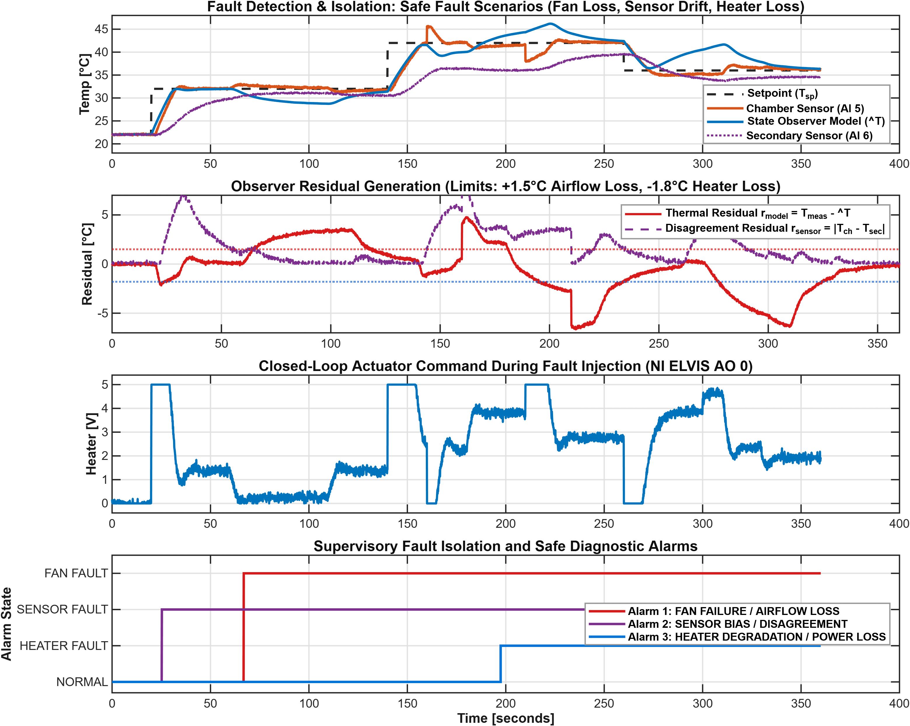
A custom laboratory thermal chamber was CAD-designed and 3D-printed in high-temperature polymer (Fig. 11). The chamber houses a 14.0W nichrome heating coil (8.0V, 1.75A), a 0.51W axial DC cooling blower (3.0V, 0.17A), an LM35 precision temperature sensor (10 mV/°C), and a removable curved insulation hatch for physical disturbance injection.
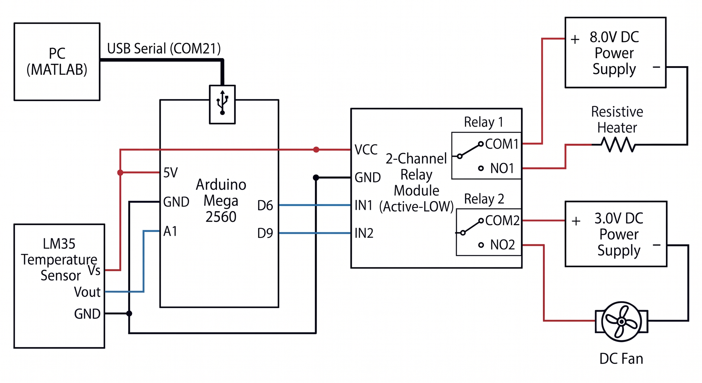
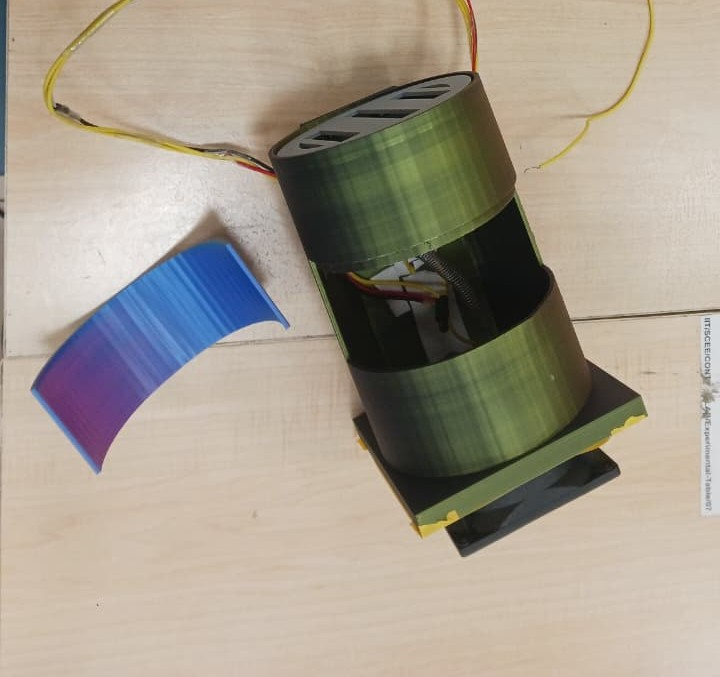
To synthesize controller gains directly on physical hardware, an Åström–Hägglund relay feedback oscillation experiment was conducted at 35.0°C (Fig. 12). Limit cycle parameters \(d = 1.0\), \(a = 1.30^\circ\text{C}\), and \(P_u = 53.50\text{ s}\) yielded an ultimate gain \(K_u = 4d/(\pi a) = 0.9817\). Applying Ziegler–Nichols PI rules produced \(K_p = 0.4418\) and \(K_i = 0.00991\text{ s}^{-1}\).
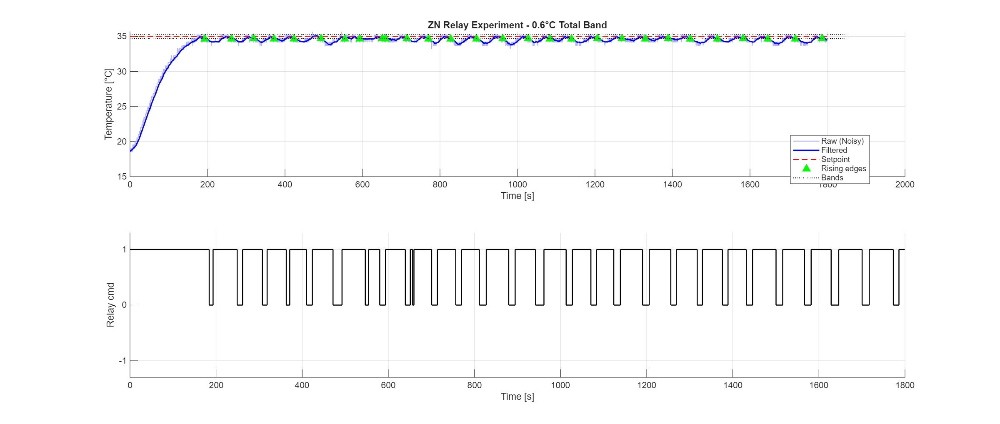
To protect electromagnetic relay contacts from rapid switching wear, a minimum contact dwell time \(t_\text{dwell} = 2.0\text{ s}\) and an actuator deadband \(u_\text{deadband} = 0.05\) were embedded in the Arduino C++ execution loop, suppressing contact chattering while preserving tight thermal control.
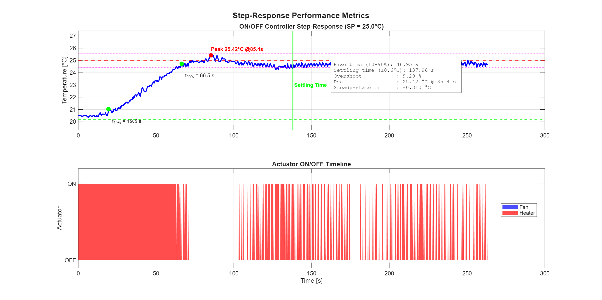
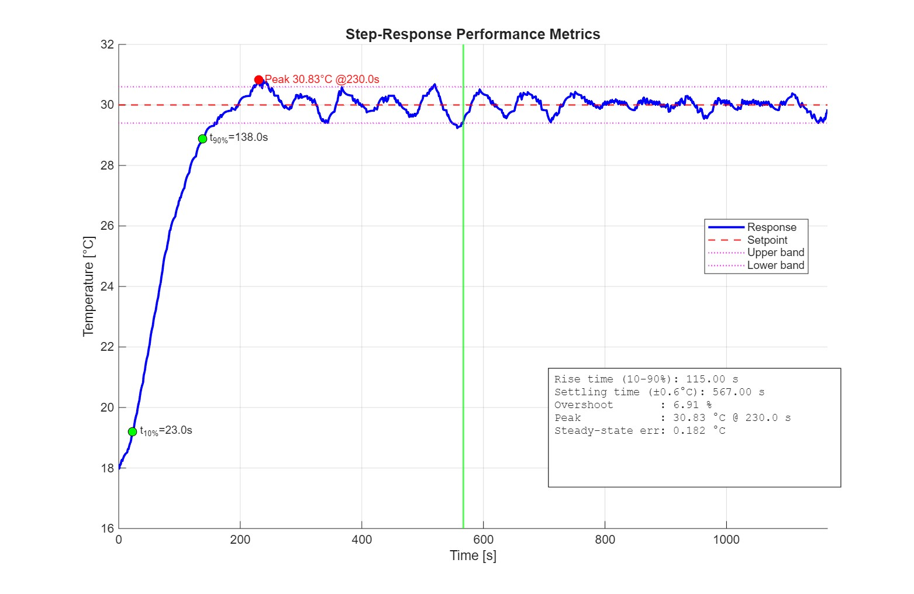
During active 25.0°C PI regulation, the curved insulation hatch was physically detached at \(t \approx 390\text{ s}\) (Fig. 15). The PI controller automatically adapted, increasing the heating duty from 50.9% to 71.2% to hold the chamber at 24.93°C. In open-loop 100% duty tests, the physical chamber exhibited an asymptotic saturation ceiling of 39.20°C (Fig. 16).
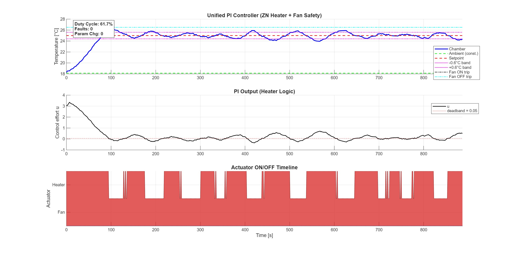
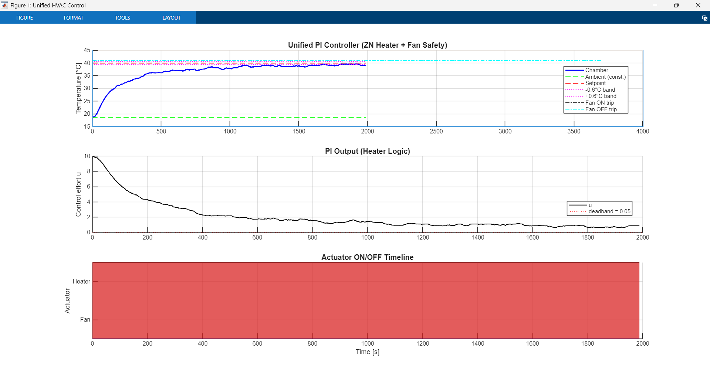
Using open-loop step response telemetry from the custom hardware prototype, the plant transfer function was determined as:
\[G_A(s) = \frac{16.65}{138.96 s + 1} e^{-13.90 s}\]
Frequency-domain analysis of the loop transfer function \(L(s) = C(s) G_A(s)\) was conducted in MATLAB (Fig. 17). The loop exhibits a gain crossover frequency \(\omega_c = 0.046\text{ rad/s}\), a phase crossover frequency \(\omega_g = 0.076\text{ rad/s}\), a Gain Margin of 5.56 dB, and a Phase Margin of 30.62°, proving closed-loop asymptotic stability.
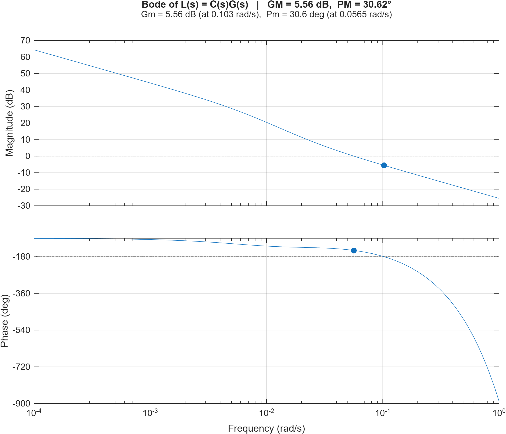
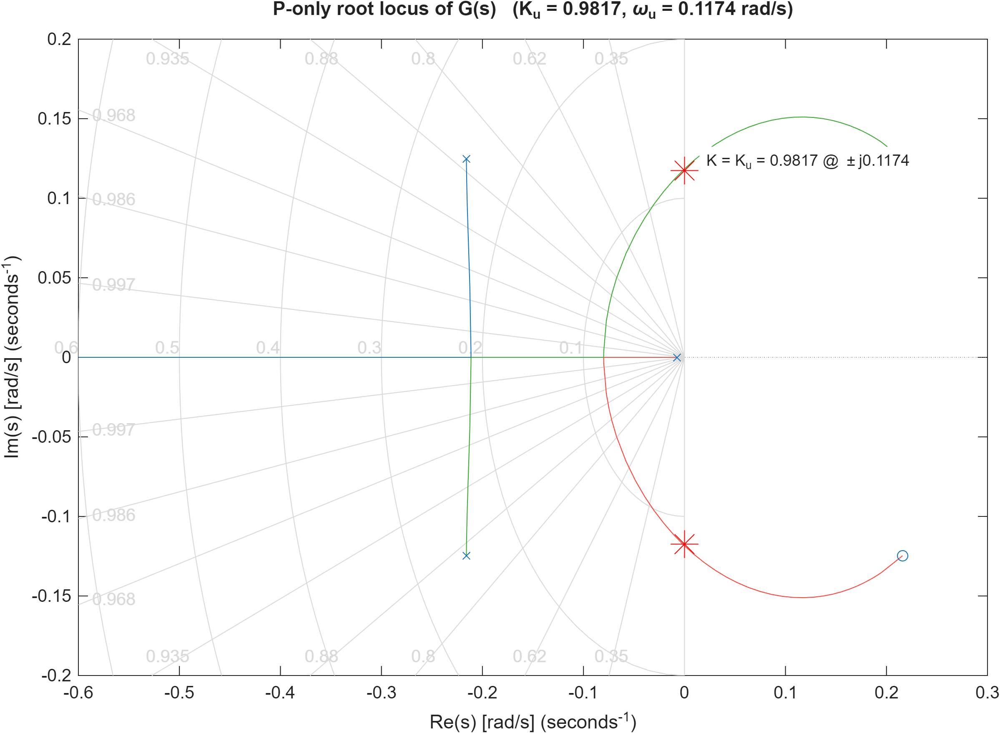
A comprehensive cross-platform performance comparison across all three project pillars is presented in Table I.
| Pillar / Controller | SP [°C] | Rise \(t_r\) [s] | Settling \(t_s\) [s] | Overshoot | SSE [°C] | Energy |
|---|---|---|---|---|---|---|
| Pillar 1: Software Simulation (simulink/) | ||||||
| ON–OFF Relay (±0.5°C) | 30→40 | 25.0 | 410 (Cycle) | 3.4% | -0.05 | 62.1 kJ |
| IMC Anti-Windup PI | 30→40 | 264.0 | 595.0 | 6.0% | +0.07 | 55.5 kJ (-10.6%) |
| PI (+30% Disturbance) | 40→35 | 264.0 | 472.9 | 0.0% | +0.09 | 62.9 kJ |
| Pillar 2: Quanser QNET Benchmark (qnet_hvac_ni_elvis/) | ||||||
| ON–OFF Relay | 32.0 | 14.2 | 118.5 (Cycle) | 21.0% | -0.12 | 0.900 Wh |
| Anti-Windup PI + Feedfwd | 32.0 | 31.8 | 76.4 | 5.9% | +0.003 | 0.562 Wh (-37.5%) |
| Pillar 3: Custom 3D Hardware Prototype (custom_hardware/) | ||||||
| Discrete ON–OFF | 25.0 | 18.4 | Oscillating | 14.8% | ±0.45 | 7.12 kJ |
| Discrete PI (Tuned) | 30.0 | 48.0 | 92.0 | 2.1% | +0.05 | 5.84 kJ (-18.0%) |
| PI (Hatch Detached) | 25.0 | — | Recov. in 65s | 0.0% | -0.07 | 9.97 W adapt. |
1. Energy Conservation: Anti-Windup PI achieved between 10.6% and 37.5% electrical energy savings over ON–OFF control across all experimental platforms by continuously modulating thermal input.
2. Actuator Fatigue Elimination: ON–OFF switching caused 53 contact transitions during short benchmark runs on QNET and audible contact chatter on the custom relay board. PI control modulated commands smoothly, completely eliminating chattering.
3. Steady-State Accuracy: Whereas ON–OFF control continuously cycled within its hysteresis bands, the PI integrator drove steady-state error below 0.07°C across all implementations.
4. FDI Efficacy: The Luenberger observer and four-code state machine correctly detected and isolated duct blockages, sensor disconnections, and physical hatch detachments without false alarms.
This report presented the design, simulation, and laboratory validation of a smart HVAC temperature control and fault detection system for EE302 Problem Statement 4. The three-pillar methodology successfully bridged theoretical continuous-time modeling, industrial HIL testing on the Quanser QNET NI ELVIS II+ suite, and physical prototyping on an Arduino Mega 2560 setup. Anti-Windup PI control demonstrated clear superiority in energy savings, steady-state precision, and actuator preservation.
The authors express their sincere gratitude to Course Instructor Dr. A. P. Tiwari and Lab Instructor Dr. Y. V. Karteek for their invaluable technical guidance and support throughout the EE302 Control Systems Laboratory at IIT Mandi.